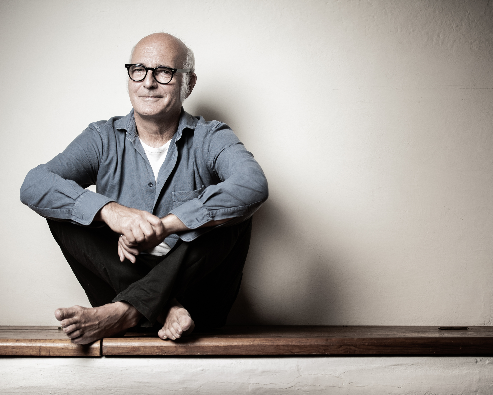

Ludovico
Einaudi
Einaudi

Ludovico Maria Enrico Einaudi OMRI (Italian: [ludoˈviːko eiˈnaudi] (About this soundlisten);
born 23 November 1955) is an Italian pianist and composer. Trained at the Conservatorio Verdi
in Milan, Einaudi began his career as a classical composer, later incorporating other styles
and genres such as pop, rock, folk, and world music.
Einaudi has composed the scores for a number of films and television productions, including
This Is England, The Intouchables, I'm Still Here, the TV miniseries Doctor Zhivago,
and Acquario (1996), for which he won the Grolla d'oro award. He has also released
a number of solo albums for piano and other instruments.
 After studying at the conservatory in Milan and subsequently with Berio,
Einaudi spent several years composing in traditional forms, including several
chamber and orchestral compositions. He soon garnered international attention
and his music was performed at venues such as the Teatro alla Scala, the Tanglewood
Festival, Lincoln Center, and the UCLA Center for Performing Arts.
In the mid-1980s, he began to search for more personal expression in a series
of works for dance and multimedia, and later for piano.
After studying at the conservatory in Milan and subsequently with Berio,
Einaudi spent several years composing in traditional forms, including several
chamber and orchestral compositions. He soon garnered international attention
and his music was performed at venues such as the Teatro alla Scala, the Tanglewood
Festival, Lincoln Center, and the UCLA Center for Performing Arts.
In the mid-1980s, he began to search for more personal expression in a series
of works for dance and multimedia, and later for piano.
Well, Let's Listen
One of His Compositions!
One of His Compositions!
Copyright 2019©